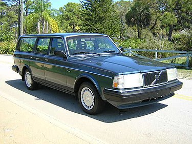

Introduktion till Volvo 240
Volvo 240 är en av de mest ikoniska bilmodellerna i svensk bilhistoria. Tillverkad mellan 1974 och 1993, blev den snabbt känd för sin pålitlighet, säkerhet och tidlösa design. Med sin kantiga form och robusta konstruktion blev Volvo 240 en favorit både bland familjer, entusiaster och yrkesförare världen över. Modellen fanns i flera olika varianter, inklusive sedan (244), kombi (245) och sportigare versioner som 240 Turbo. Än idag är Volvo 240 en uppskattad klassiker som fortsätter att rulla på vägarna, ett bevis på dess hållbarhet och kvalitet.
